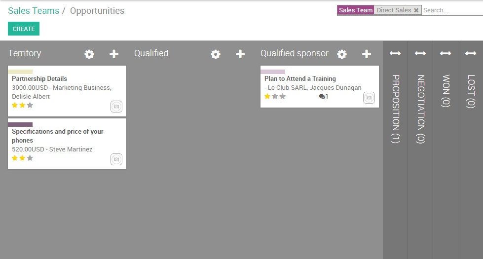

A well structured sales pipeline is crucial in order to keep control of your sales process and to have a 360-degrees view of your leads, opportunities and customers.
The sales pipeline is a visual representation of your sales process, from the first contact to the final sale. It refers to the process by which you generate, qualify and close leads through your sales cycle. In Odoo CRM, leads are brought in at the left end of the sales pipeline in the Kanban view and then moved along to the right from one stage to another.
Each stage refers to a specific step in the sale cycle and specifically the sale-readiness of your potential customer. The number of stages in the sales funnel varies from one company to another. An example of a sales funnel will contain the following stages: Territory, Qualified, Qualified Sponsor, Proposition, Negotiation, Won, Lost.
Of course, each organization defines the sales funnel depending on their processes and workflow, so more or fewer stages may exist.
Create and organize your stages
Add/ rearrange stages
From the sales module, go to your dashboard and click on the PIPELINE button of the desired sales team. If you don't have any sales team yet, you need to create one first.

From the Kanban view of your pipeline, you can add stages by clicking on Add new column. When a column is created, Odoo will then automatically propose you to add another column in order to complete your process. If you want to rearrange the order of your stages, you can easily do so by dragging and dropping the column you want to move to the desired location.

Tip
You can add as many stages as you wish, even if we advise you not having more than 6 in order to keep a clear pipeline
Activate the lead stage
Some companies use a pre qualification step to manage their leads before to convert them into opportunities. To activate the lead stage, go to and select the radio button as shown below. It will create a new submenu Leads under Sales that gives you access to a listview of all your leads.

Set up stage probabilities
What is a stage probability?
To better understand what are the chances of closing a deal for a given opportunity in your pipe, you have to set up a probability percentage for each of your stages. That percentage refers to the success rate of closing the deal.
Note
Setting up stage probabilities is essential if you want to estimate the expected revenues of your sales cycle
For example, if your sales cycle contains the stages Territory, Qualified, Qualified Sponsor, Proposition, Negotiation, Won and Lost, then your workflow could look like this :
Territory : opportunity just received from Leads Management or created from a cold call campaign. Customer's Interest is not yet confirmed.
Success rate : 5%
Qualified : prospect's business and workflow are understood, pains are identified and confirmed, budget and timing are known
Success rate : 15%
Qualified sponsor: direct contact with decision maker has been done
Success rate : 25%
Proposition : the prospect received a quotation
Success rate : 50%
Negotiation: the prospect negotiates his quotation
Success rate : 75%
Won : the prospect confirmed his quotation and received a sales order. He his now a customer
Success rate : 100%
Lost : the prospect is no longer interested
Success rate : 0%
Tip
Within your pipeline, each stage should correspond to a defined goal with a corresponding probability. Every time you move your opportunity to the next stage, your probability of closing the sale will automatically adapt.
You should consider using probability value as 100 when the deal is closed-won and 0 for deal closed-lost.
How to set up stage probabilities?
To edit a stage, click on the Settings icon at the right of the desired stage then on EDIT

Select the Change probability automatically checkbox to let Odoo adapt the probability of the opportunity to the probability defined in the stage. For example, if you set a probability of 0% (Lost) or 100% (Won), Odoo will assign the corresponding stage when the opportunity is marked as Lost or Won.
Tip
Under the requirements field you can enter the internal requirements for this stage. It will appear as a tooltip when you place your mouse over the name of a stage.